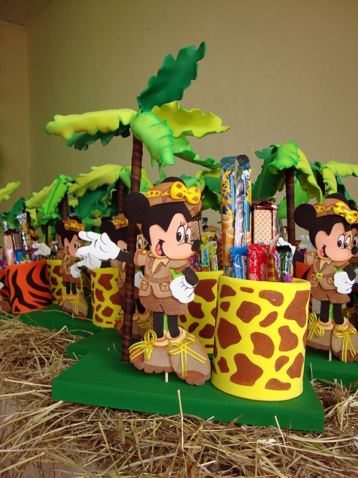

Smetoniškas medaus tortas
- Tortas „Smeigtukas“ - pats skaniausias desertas pasaulyje!
Tortas yra sotus, sveikas pasirinkimas ir gali būti vartojamas ne tik per progas ar šventes. Tai gali būti ir užkandis, nes visos sudedamosios dalys saikingai vartojant yra sveikatai palankios. Pasiruošimas gaminimui: Užmerkti anakardžius ir migdolus bent 5 valandoms kambario temperatūros vandenyje. Gaminimo eiga. Pagrindo paruošimas: - Tortai, tortų receptai - Receptai | Patiekalai
Tortas puikus, tik gyvenu ne Lietuvoje, tai kondensuoto pieno nepavyko gaut, teko eksperimentuot, tai pakeičiau į riešutų sviestą. Gavos suuper, visi pakartot prašė, tai manau, kad čia betkuriai gaspadinei geras įvertinimas. 😀 - Net 42 ypatingi, bet nesudėtingi šventiniai tortai - kurį ...
Naujausi forumo pranešimai. Forumas. parašyta forume Skonių Blogas nuo Nida on 2017/10/29 19:41 Nuotraukų ir receptų peržiūra. parašyta forume Skonių Blogas nuo Gedukass on 2017/04/17 20:50 - Tortas „Medutis“ – be jokių įmantrių ingredientų, pagamins ...
Tortai - Kiekvienas ras tobuliausią desertą sau! Pyragai, bandelės, keksiukai, ledai, pyragaičiai, pudingai, putėsiai, saldainiai, sausainiai, tortai, želė ... - Tortas - visi receptai | Maistas | 15min.lt
Skaniausi tortai, pyragai, desertai, keksiukai, meduoliai, kanelės, macarons, sausainiai ir kiti skanėstai tik iš aukščiausios kokybės natūralių produktų. - Desertai: Tortai - 1000receptų.lt
Šokoladinis maskarponės sūrio tortas - kremiškas ir tirpstantis burnoje Žavingas tortas "Šokoladinė pagunda" su grietininiu kremu ir karamele Šokoladinis uogienės biskvito tortas su grietinės pertepimu - Tortai ir desertai - Bijola
Š pinatų tortas su pertepimu ir glajumi pagal Beatą - patiekalas, kurį nesunkiai pasigaminsite pagal šį receptą. Daug gerų, išbandytų receptų, kuriuos privalai išmėginti! - Tortas „Akimirka“ | MAXIMA
Tortas PANDA su kakaviniais sausainiais, 1 kg. €10,99 €10,99/kg. Tortas PANDA su kakaviniais sausainiais, 1 kg. Tr Kt Pn Š t Sk KARTU REKOMENDUOJAME. Tortas su mangų tyrės ir varškės kremu, 1 kg. €10,99 €10,99/kg. Tortas su mangų tyrės ir varškės kremu, 1 kg ... - Tortas „Snickers“ - Beatos virtuvė
Tortas labai greitas, labai paprastas ir labai skanus! Tortas gaivus ir pasakiškai gardus, o naudoti jam galite ne tik braškes, bet ir avietes, vyšnias, geriausia tai, kad net nebūtina turėti šviežių uogų - galima naudoti ir šaldytas, tik jas atitirpinus reikėtų nuvarvinti, kad pyragas gerai sustingtų. Receptą rasite čia. - tortas - išsamiai DELFI.lt
Šis tortas labai jau paprastas: saldus morenginis pagrindas su trapiais sausainiais, kreminio sūrio ir grietinėlės pertepimas ir šviežios braškės. Labai paprasta. Lengva. Saldu, gardu ir vasariška. Mums labai patiko! Sudėtingumas: nieko labai sudėtingo. Receptas publikuotas internetiniame portale Ji24.lt
LT German (Deutsch) English (English) Spanish (español) Lithuanian (lietuvių) Polish (polski) Russian (руÑÑкий) Meniu Mano išsaugoti receptai Alkoholiniai kokteiliai Brendžio kokteiliai Degtinės kokteiliai Džino kokteiliai Likerio kokteiliai Romo kokteiliai Š ampano kokteiliai Tekilos kokteiliai Vermuto kokteiliai Viskio kokteiliai Pasaulio virtuvė Lietuviški patiekalai Azijietiški patiekalai Indiški Patiekalai Itališki patiekalai Kiniški patiekalai Bulvių patiekalai Paukštienos patiekalai Antienos patiekalai Kalakutienos patiekalai Vištienos patiekalai Apkepai Desertai Bandelės Keksai ir keksiukai Sausainiai Saldainiai Patiekalai pusryčiams Blynai Sumuštiniai Daržovių patiekalai Daržovės ir atsargos žiemai Greitai pagaminami patiekalai Grybų patiekalai Mėsos patiekalai Jautienos patiekalai Kepsniai ir kotletai Kiaulienos patiekalai Patiekalai iš faršo Triušienos patiekalai Jūros gėrybių patiekalai Nealkoholiniai gėrimai Kavos Kalėdiniai patiekalai Kepiniai Kiaušinių patiekalai Košės Makaronai Mišrainės Pyragai Obuolių pyragai Š okoladiniai pyragai Varškės pyragai Trupininiai pyragai Padažai ir pagardai Patiekalai pietums Sriubos Patiekalai vakarienei Patiekalai iškylai Š ašlykai KÅ«Äių patiekalai Žuvies patiekalai Lašišos patiekalai Silkės patiekalai Tuno patiekalai Patiekalai vaikams Patiekalai velykoms Patiekalai visai šeimai Picos Salotos Sveiki patiekalai Tortai Troškiniai Užkandžiai Užkandžiai prie alaus Vieno kąsnio užkandžiai Varškės patiekalai Veganiški receptai Veganiški pyragai Vegetariški patiekalai Virtinukai Receptai Tortai, tortų receptai Smetoniškas medaus tortas
Smetoniškas medaus tortas
Recepto Autorius Visko po trupinėlį
Paruošimas80 min
Porcijos8
Jei aš lietuvaičių paklausčiau - koks yra tas pats skaniausias tortas, net neabejoju, kad 9 iš 10 lietuvių atsakytų - tai yra medaus tortas (medutis) . Galiu ir aš teigti, kad gardesnio ir gražesnio tiesiog nėra! Šį kartą noriu su Jumis pasidalinti visų labai pamiltų smetonišku medaus tortu, kuriame nėra jokių įmantrių ingredientų. Man asmeniškai tai yra pats " užtikrinčiausias " receptas, nes jis visada pavyksta ir niekada nenuvilia. Šį receptą labai rekomenduoju ateičiai išsisaugoti ir Jums, nes tai tikras tortų karalius .Š io medaus torto receptą jau prieš daugybÄ™ metų radau senuose mamytės užrašuose. Tos užrašų knygutės kraštai jau senokai pageltÄ™, kai kuriuos lapus jau net sunku išskaityti, nauji patiekalai užkariauja mūsų virtuves, bet laiko patikrinti receptai lieka. Galima pasidžiaugti, kad dabar galima juos įkelti į internetą ir pasidalinti su daug daugiau žmonių nei seniau. Ir mane tai labai džiugina, dar labiau džiugina, kad žmonės gali komentuoti, dalintis ir rašyti savo nuomones, pastebėjimus. Taip pat gali pagirti arba pasakyti kas negerai.
Taigi einam prie medaus torto recepto, kuris man labai labai primena vaikystę, mama jį gamindavo tobulai, bet aš esu tikra, kad man pavyksta taip pat gerai arba gal net geriau!:)
Ingredientai
cukrus: 1 stiklinės (1 stiklinė - 250 mililitrų) kiaušiniai : 3-4 soda: 1 arbatinio šaukštelio (nugesinto su 1 arbatinio šaukšteliu acto) miltai: 4-6 stiklinių sviestas : 150 gramų medus: 7-10 šaukštų Pertepimui: grietinė : 1,2 kilogramo (arba grietinėlė) citrinos: 2 cukraus pudra: 6-7 valgomųjų šaukštų (arba pagal skonį) ReklamaJums gali patikti
Kepta vištiena tešloje - vyras prašė gaminti tris dienas iš eilės! Skanus užkandis su tunu ant pomidorų - paprasta, gražu ir greitai padaroma! Česnakinis kiaulienos kumpis ReklamaRecepto paruošimas
1. Iš pradžių į dubenį įmušame kiaušinius bei juos gerai išplakame 2. Suberiame cukrų, supilame medų, sudedame gabaliukais supjaustytą sviestą. Dubenį įstatome į karšto vandens vonelÄ™ bei masÄ™ plakame kol sutirštės ir pasidarys puri. Tuomet masÄ™ atvėsiname bei suberiame miltus, nugesintą sodą arba kepimo miltelius. Reklama 3. Minkome, kol nelips prie rankų. 4. Užminkytą tešlą dedame į maistinÄ™ plėvelÄ™ padedame maždaug 60 minučių šaltai. 5. Po to tešlą išimame iš šaldytuvo ir išimame iš maistinės plėvelės. Reklama 6. Tada iš atšaldytos tešlos ant kepimo popieriaus (prieš tai patepto su aliejumi) iškočiojame norimo dydžio blynus (kad lengviau kočiotųsi bei tešla neliptų prie koÄÄ—lo - pastarąjį taipogi patepti aliejumi). 7. Ant iškočioto blyno uždedame didelÄ™ lėkštÄ™ arba apskritą formą bei išpjauname apskritimus. Reklama 8. Kepame iki 220-250 laipsnių temperatūros įkaitintoje orkaitėje (kartu su kepimo popieriumi), kol paruduos. Tik įdedame, ir jau reikia labai greitai ištraukiame, kepa vos kelias minutes. 9. Nuo iškepusio dar karšto blyno atsargiai nulupame kepimo popierių bei iškart apipjauname kraštelius pagal formą. 10. Po to į grietinÄ™ supilame citrinų sultis, suberiame cukraus pudrą - ji suteikia purumo. Gerai išplakame mikseriu iki standumo. Reklama 11. Kremu pertepame iškeptus lakštus. 12. Viršų ir torto kraštus taipogi aptepame paruoštu kremu, tada apibarstome trupiniais bei mažiausiai 8 valandom (idealiausia visai parai) paliekame vėsiai, kad susigertų kremas. Reklama 13. Papuošiame tortą pagal savo norus ir fantaziją. 14. Prapjauname ir lepinamės! 15. Pastebėjimas: Miltų man pačiai susinaudojo beveik 6 stiklinės. Bet galite minkštesnÄ™ tešlą daryti, nes vėliau ji šaldytuve pakietėja, susistovi bei lengviau kočiojasi. Originaliame recepte teigiama, kad iš tokio kiekio tešlos gaunasi maždaug 9-10 lakštų. Vieną jų - skiriame trupiniams, torto papuošimui. Iš šio tešlos kiekio man pačiai gavosi ganėtinai daug lakštelių: 10 vnt. - 28 centimetrų skersmens bei 10 vnt. 16 centimetrų skersmens. Tortas pats gardžiausias po 2-3 parų, kai susistovi bei subrÄ™sta. 16. Rekomendacija: Daugiau medaus tortų receptų rasite: Medaus tortai . KomentuotiSekite mus:
Irena
Manau, kad pamiršot prieskonius.Atsakyti
World Recipes Lietuva
manau, kad ne:)Laima
Tikrai nieko netrūksta ir super receptas, pavyksta iš pirmo karto :) Ačiū :)juodavalka
Tikrai, viskas taip kaip mama mane išmo...kino, tik į tešlą dar maltų, tiksliau susuktų į skudurėlį ir sudaužytų gvazdikėliųDalia Ka
Tai jau tikrai !Elijus
Man kilo klausymas kokio riebumo grietine naudoti ir kokį grietinės brandą patartumete naudoti?Atsakyti
World Recipes Lietuva
Elijau, grietinė tiks kuo riebesnė, brand as šiuo atveju nėra toks svarbus. :)Rėda
Kaip Jūs padarėte biteles? Jums labai gražiai išėjo!Atsakyti
Sniegė
Kepiau šį tortą, viskas pavyko, labai skanus ir didelis išėjo, nuostabaus skonio.Atsakyti Reklama
Virginija
As butinai dar idedu i tesla arb. sauksteli maltu gvazdikeliu ir tiek pat cinamono.Atsakyti
Rena
o kokia iseiga? Koks torto svoris gaunasi?Atsakyti
Stasė
Gaunasi apie 3-4 kg torto. Ir nesensta greit ReklamaKarališkas Medaus tortas - Medutis
Noriu pasigaminti
Jogurtinis varškės tortas su persikais ğŸ‘
Noriu pasigaminti
Braškių tortas su varške (nekeptas)
Noriu pasigaminti
Braškių, grietinėlės ir maskarponės tortas
Noriu pasigaminti
Tortas želiukas - superinis desertas ir vienas iš mano mėgiamiausių!
Noriu pasigaminti
Receptas: Šokoladinis sūrio tortas
Noriu pasigaminti
ReklamaAvietinis juodojo šokolado tortas
Noriu pasigaminti
Morkų ir cukinijų tortas su maskarpone
Noriu pasigaminti
Šokoladinis tortas su lazdyno riešutų pertepimu
Noriu pasigaminti
Varškės tortas su braškėmis (nekeptas)
Noriu pasigaminti
Tortas su avietėmis ir pistacijomis - pagerintas Vaidos tortas!
Noriu pasigaminti
Greitas nekeptas sausainių tortas su jogurtiniu kremu ir vaisiais
Noriu pasigaminti
traffix.lt Tortai, tortų receptaiSekite mus:
Prisijungti Prisijungti su Google Prisijungti su Facebook Registruotis Reklama Reklama Reklama Reklama XPrisijungti
Prisijungti su Google Prisijungti su Facebook